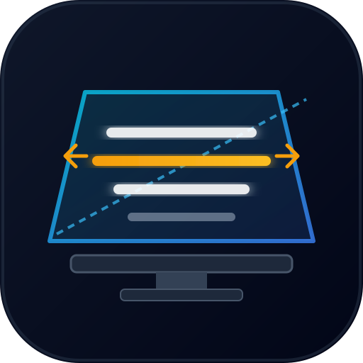

Upuść plik tekstowy (.txt, .md), aby go wczytać
Skieruj aparat telefonu na poniższy kod QR. Tekst i Twoje ustawienia otworzą się od razu na smartfonie – bez logowania i bez kabli!
💡 Wskazówka: Po otwarciu na telefonie kliknij „Udostępnij” -> „Dodaj do ekranu początkowego” na iOS lub „Zainstaluj” na Androidzie, by używać pełnego ekranu bez pasków przeglądarki!
Twoje teksty i preferencje są bezpiecznie zapisywane w Twojej przeglądarce (LocalStorage).
Nie musisz zakładać konta. Wystarczy kliknąć Telefon / QR u góry strony i zeskanować kod aparatem telefonu.
Jeśli chcesz automatycznej synchronizacji w czasie rzeczywistym między wieloma stanowiskami, możesz wkleić dane swojego darmowego projektu Supabase:
📱 Na telefonie: Dotknij dowolnego miejsca ekranu, aby zatrzymać lub wznowić przewijanie. Możesz też swobodnie przewijać tekst palcem w trakcie pauzy.